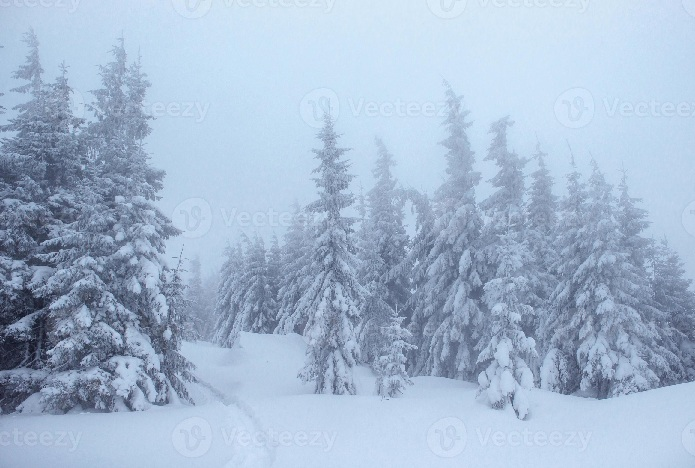
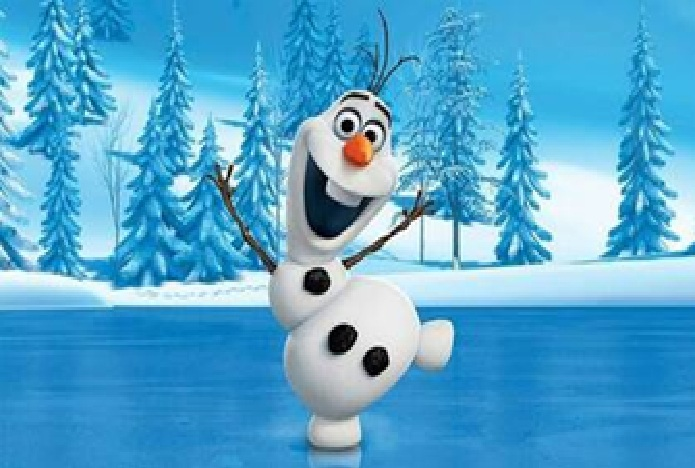

Las hermanas se adentraron en el espeso bosque, donde la niebla era tan cerrada que apenas podían ver sus propios pies. De repente, una risa familiar rompió el silencio; era Olaf, quien intentaba atrapar hojas de otoño que flotaban mágicamente en un remolino de viento, ajeno al peligro del frío repentino.
Elsa utilizó sus poderes para crear un camino de hielo que las guiara a través del pantano. Anna, siempre atenta, notó que las runas antiguas en las piedras comenzaban a brillar, indicando que estaban muy cerca de descubrir el origen de la anomalía climática que amenazaba su hogar.
 | Tiempo | Suceso |
|---|---|
| Mañana | Salida del Castillo de Arendelle. |
| Tarde | Encuentro con Olaf en el Bosque. |